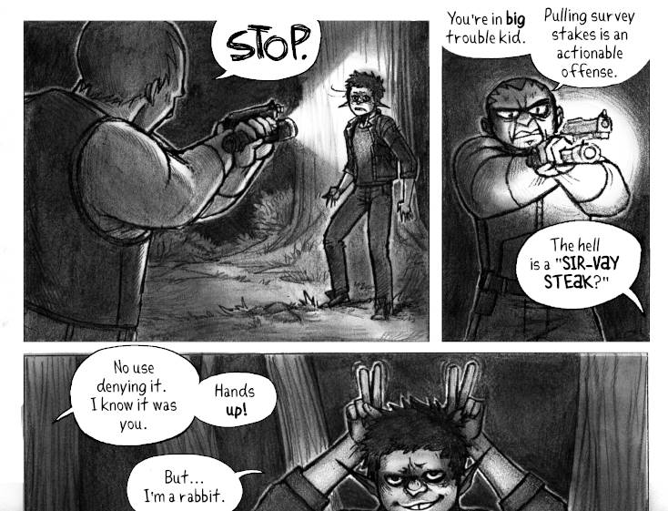
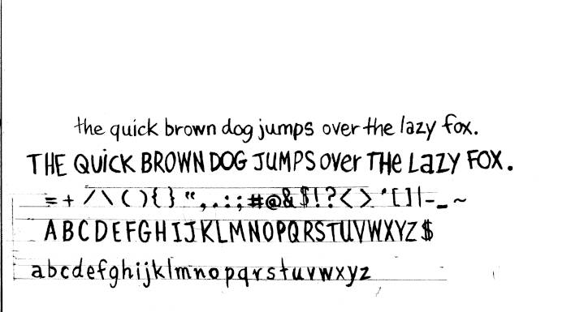
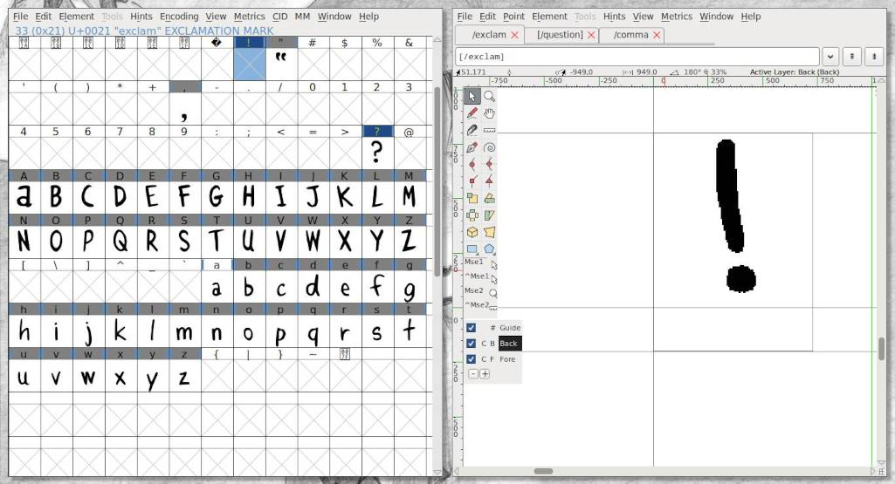
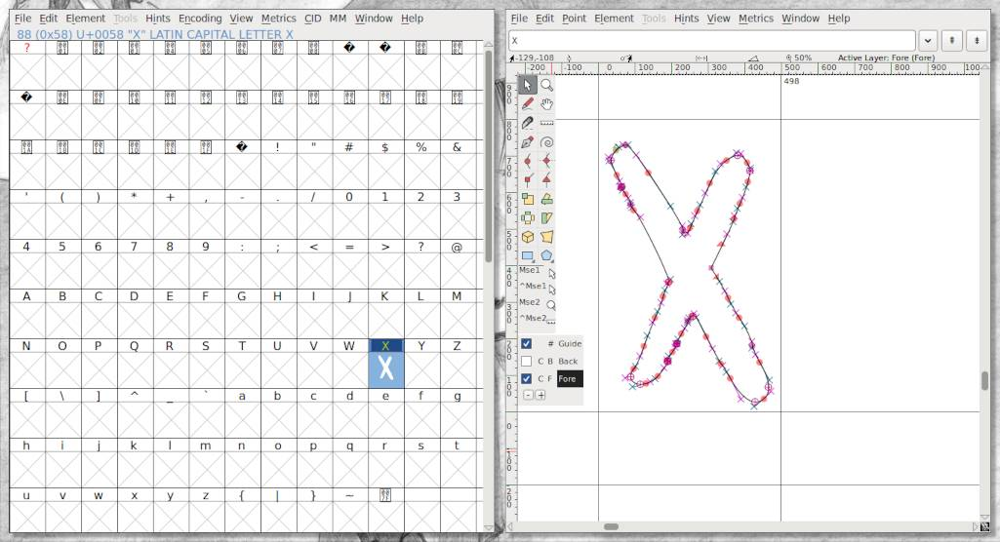
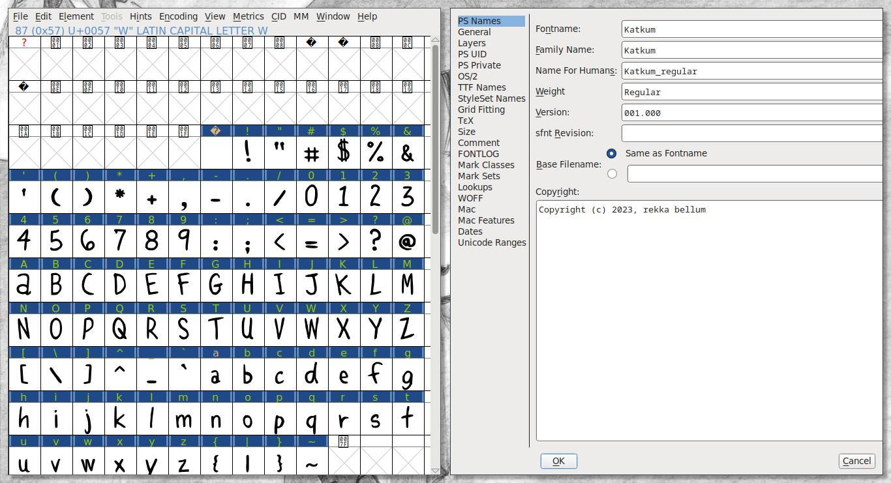

About
About Projects
Projects Books
Books Games
Games Stories
Stories Store
Store Collection
Collection Notes
NotesThis month I decided to try and learn how to make a font to use in my comic hakum. Previously, I was drawing the text with my pen tablet, digitally, and the result was fine but was at times difficult to read. I didn't want to use any existing fonts and so I decided to try and learn to make one of my own handwriting.
Disclaimer: This is my first time making a font. I'm not a designer, nor do I master font creation in general or the use of FontForge. I create things out of necessity, and for fun.
This write-up is to describe my process, and can help beginners like me make their first font for personal use. Note that this write-up is to make a TTF font for use in web publishing. It is not a full font(no bold, or italics).
I made two iterations of my font(which I named Katkum), the first was based on my digital handwriting(using a pen tablet), and the second was made from a scanned image of my handwriting. The second iteration of the font was more natural because on paper my writing is less precise, more organic.
I learned a lot about fonts on this journey, namely these terms which describe all parts of a typeface. Knowing these terms and their function can help you make better design choices, and will ensure that you draw a functional font.
The typeface anatomy
- Ascender: The portion of a minuscule letter that extends above the mean line of a font. That is, the part of a lower-case letter that is taller than the font's x-height.
- Baseline: The line upon which most letters sit and below which descenders extend.
- Cap Height: A line representing the height of most capital letters.
- Descender: The portion of a letter that extends below the baseline of a font (ex: p and q).
- Overhang: Rounded bottoms of letters like O and B that may dip just below the baseline.
- X-Height: The distance between the baseline and the mean line of lowercase letters in a typeface.
I focused on the uppercase(A-Z) and lowercase(a-z) glyphs, numbers(0-9), and glyphs for punctuation(comma, exclamation mark, question mark, etc).

After I scanned the image, I applied a threshold to the image to remove all grays.
Then, because of the nature of pencil on paper, I spent time fixing some of the imperfections in the letters using the pencil tool in Gimp(with all dynamics turned off, in Tool Options). If using a raster brush, it is necessary to apply threshold again to the image. The goal is to get clean lines.
I copy/pasted all of the cleaned-up letters in a document with a height and width that accommodates the tallest, and widest letter (in this case, capital W, depending on the font though of course).
This is a good time to double-check the weight of all of the lines. If the thickness varies too much, it may not look good.
I exported all of the letters individually as PNGs in my project folder (mine had a height of 107x147). The glyphs don't have to be that big at this point, unless they're very intricate.
FontForge
I chose FontForge to create my font. After creating a project, you'll see a window featuring empty slots for all of the possible glyphs needed to make a font.
To get started, double-click on any empty slot. I selected the ! glyph, which opens a second window.
This is the glyph editing window. On the bottom left, there is a box displaying 3 layers. Select the Back layer in the lower left menu, go to File>Import to import the PNG glyph for !. The glyph reference will appear on the canvas.
Helpful shortcuts: z to zoom in, x to zoom out.
At this point, you can choose to delineate the glyph yourself, or you can use Autotrace(to do this, select the Fore layer, and go to Select>Autotrace).
Autotrace will use the background image as a reference and will automatically recreate it, complete with control points and bézier curves. Although it can be a bit messy, and cause missing extrema issues(the extreme part of any curve). Once you have a closed shape, the glyph will appear in the other window.
At this point, I like to adjust the space on the left and right side of a glyph by grabbing the two lines on each side, and by sliding them (this determines how wide the final glyph will be). If you want to auto-center all of the glyphs at once, go to Metrics>Auto Width. If you want all the glyphs to be centered, Metrics>Center In Width.
If fixing some of the lines of a glyph, it helps to turn the reference layer off. If you wish to start over with a glyph, go to the main window and select the desired glyph, then go to Edit>Clear, to remove the reference layer Edit>Clear Background.
Repeat this procedure for all of the glyphs. A very quick way to describe a very long process.
Font Info
Select Element>Font Info. Under PS Names, fill out your font's information.
If your goal is to export as a TTF, in that same window go to General, and change the Em size to 1024. OT fonts have different requirements.
Kerning
In Element>Font Info, navigate to Lookups, click on the GPOS tab, and click on Add Lookup.
In the Type dropdown menu, select Pair Position (Kerning). In the Feature column, click on the down arrow next to New, select Kern Horizontal Kerning, and click OK.
Then select the newly-created entry in GPOS, and click on Add Subtable (right hand side). Leave the name as is, and click OK.

In this menu, leave settings as they are and drag-select all of the letters you want to kern in both tables. Be sure to select both the upper and lower case letters, to select both sets in a table press shift. Press OK.
Now click on pairings, a magnified version of the glyph pairings will appear in the bottom half of the window. You can drag the second glyph and bring it closer or farther to the first glyph. Do this to all of the glyphs to make sure that they appear well together.

Font testing
You can test the font and kerning in FontForge. Go to File>Print. In this view you'll see how your font looks.

The default text doesn't show all possible pairing, but it's possible to add your own text. See the document kern_pairings.txt which has all of the kern pairings.
Problems with exporting the font
Go to File>Generate Fonts. At this point FontForge may hold certain characters for review, you may encounter issues like:
- Missing points at extrema
- Non-integral coordinates
- Self intersecting
A non-integral coordinate is one(or many) points in the outline of a glyph with a number(its position) that has a fractional component (ex: 2.25). To fix non-integral coordinates in a glyph, select the problematic glyph, go to Element>Validation>Find Problems, check the box for "non-integral coordinates", click OK, and press fix until it stops. In a handwritten font which typically doesn't rely too much on precision(depends, but for the most part), a point that is moved to a new coordinate that is very near(and non-fractional) will not be too dramatic.
Extrema are the most extreme points in a curve(the yellow circle in FF). When FF calls for "missing points at extrema", it means that a curve's control points are pushing the curve out past the edge. The peak of the curve must be a (yellow)point. Play with the control points to get the extreme part of the curve to become a yellow circle. Element>Add Extrema can help solve the problem, but it may distort the glyph or create more issues with non-integral coordinates. It's still possible to generate a font even if this error appears in the log, but it may create some annoying subtle distortions in the font.
Self intersecting means that the outline of the glyph is somehow overlapping itself. Check all of the lines to remove the overlap.
Choosing a font type
For my use, a TTF(true type font) is enough. Choosing something like OTF is unnecessary because I don't plan on storing many glyphs (I don't specifically want a bold or italic font, and if I ever do I can make it a separate font), nor do I need ligatures. The content the font will be used for is published on the web, and TTF is excellent for that.
To learn how to install fonts on Linux, see my My spellbook.